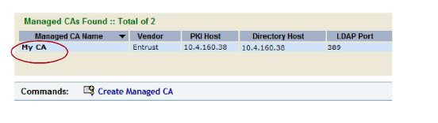
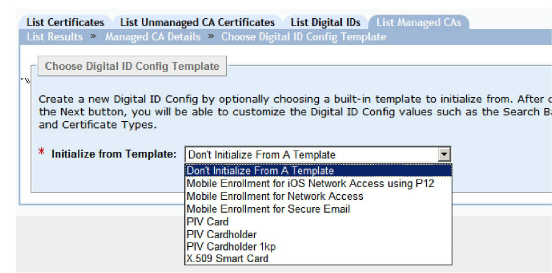
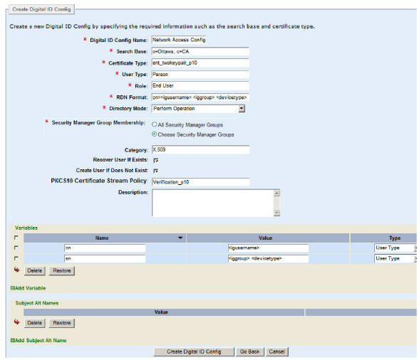
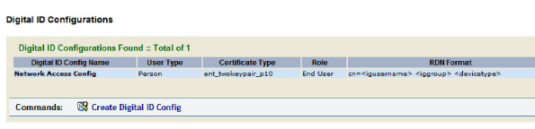

|
IdentityGuard Server 13.0 Administration Guide |
|
IdentityGuard Server 13.0 Administration Guide |
You must create a digital ID configuration on Entrust IdentityGuard.
To create a digital ID configuration for use with a Security Manager CA
1. In the Entrust IdentityGuard Administration interface, on the List Managed CAs tab, click My CA, or whatever your CA is called.

The Managed CA Details page appears.
2. At the bottom, click Create Digital ID Config.
The Choose Digital ID Config Template page appears.

3. Select one of the following templates:
● Mobile Enrollment for Network Access
● Mobile Enrollment for iOS Network Access using P12 If you choose this template, you must set the Self-Service Configuration property Use SCEP for Network Access Digital ID to False, as described in To configure digital ID device type settings (specifying SCEP for network access digital IDs), Step 3.
● Mobile Enrollment for Secure Email
If you are unsure of which template to select, see Digital ID types and formats for more information.
If you want both network access and email, you will have to create two digital ID configurations, one for each. For now, pick one.
The other options are for smart credentials, so ignore them.
4. Click Next.
The Create Digital ID Config page appears, with several fields and options pre-filled based on the template you chose.
5. Fill out each field as follows.
Note: Many of items below are used as the building blocks from which to construct the user’s digital ID.
Note: Many of the fields map to similar items in Security Manager, so if you need to learn more about them, consult the Security Manager documentation.
● Digital ID Config Name: Enter a globally unique name that describes your digital ID configuration. For example, Network Access Digital ID Config.
● Search Base: Enter the searchbase associated with your Security Manager CA. This information is in Security Manager’s entrust.ini file, under SearchBase=. Search bases are configured in Security Manager, so consult its documentation for details.
● Certificate Type: Leave it at the default unless you have a reason to change it. The defaults are: ent_twokeypair_p10 (for network access), and ent_skp_dualusage (for secure email, and iOS network access using P12). Certificate types are configured in Security Manager, so consult its documentation for details.
● User Type: Leave it at Person unless you have a reason to change it. User types are configured in Security Manager, so consult its documentation for details.
● Role: Leave it at End User unless you have a reason to change it. This role is configured in Security Manager, so consult its documentation for details. If you are using PKCS#12 digital IDs, this role must be the one with the user policy that has PKCS#12 export enabled. You will be enabling PKCS#12 export in a later step (Step 15: Configure Security Manager policies).
● RDN Format: Leave it at cn=<igusername> <iggroup> <devicetype> (network access and iOS network access using P12) or cn=<igusername> <iggroup> (secure email) unless you have a reason to change it. This field is used to calculate the first part of the user’s DN (called the RDN), which is in turn used to find an existing user in Security Manager. By contrast, the Variables (below) tell Entrust IdentityGuard how to calculate the user’s DN to create the user in Security Manager.
If you do decide to change the RDN format, ensure that you separate your variables with a space. For example, if your RDN format is:
cn=<uuid> <devicetype>
separate <uuid> and <devicetype> with a space.
● Directory Mode: This setting takes effect when Entrust IdentityGuard is creating a digital ID and controls how or if an entry is created in the Security Manager LDAP directory.
– Perform Operation (recommended). This means “create the directory entry or reuse an existing entry if needed”. This is the recommended option because it will always succeed.
– Perform Operation (fail if not needed) means “create the directory entry but do not reuse an existing entry”. The digital ID will not be created if the directory entry already exists.
– Skip Operation (fail if needed) means “Reuse an existing entry but do not create one if it does not already exist”. The digital ID will not be created if the directory entry does not already exist.
– Skip Operation means “Reuse an existing entry but do not create one if it does not already exist”. The digital ID will not be created if a directory entry is required.
● Security Manager Group Membership: This setting indicates which Security Manager groups will be assigned to users with this digital ID configuration. There are two sub-options:
– All Security Manager Groups. This is the default. This option indicates that users are assigned all Security Manager groups that have been defined.
– Choose Security Manager Groups. This option allows you to specify one or more Security Manager groups to assign to the digital ID configuration. To add the group, enter its name exactly as it appears in Security Manager Administration and click Add.
● Category: Leave it at X.509 unless you have a reason to change it. Category defines the type of digital ID you are adding.
● Recover User If Exists: When this setting is enabled, users can enroll for digital IDs even if they already have an account in Security Manager. As a consequence, they can click the I’d like to request a digital ID link in Self-Service multiple times to recreate their digital ID over and over. When this setting is disabled, users cannot obtain a digital ID after they have an account Security Manager. The effect is that they can only request a digital ID once, during their initial enrollment.
Note: In Security Manager terminology, recreating a digital ID is called a ‘recovery’.
● Create User If Does Not Exist: When this setting is enabled, then when a user requests a digital ID, and they do not yet have an account in Security Manager, they will have an account created for them. When disabled, the digital ID request for this same user will fail, and no account will be created for them. The default is enabled (for network access and iOS network access using P12) and disabled (for secure email).
● PKCS10 Certificate Stream Policy: Leave it at the default unless you have a reason to change it. The defaults are: <empty>(for secure email and iOS network access using P12), and Verification_p10 (for network access). Certificate definitions are configured in Security Manager, so consult its documentation for details.
● Description: Optionally, enter a description for the digital ID configuration.
6. Leave the Variables section as-is. These variables are used to generate the user’s DN, which becomes part of the user entry in Security Manager, and also goes into the digital ID being created. Any variable in the RDN Format must exist in the Variables section. However, there can exist variables that do not exist in the RDN Format.
7. Leave the Subject Alt Names section empty.
The following image shows what a network access digital ID configuration might look like.

8. Click Create Digital ID Config.
Your Managed CA page now includes your digital ID configuration.
